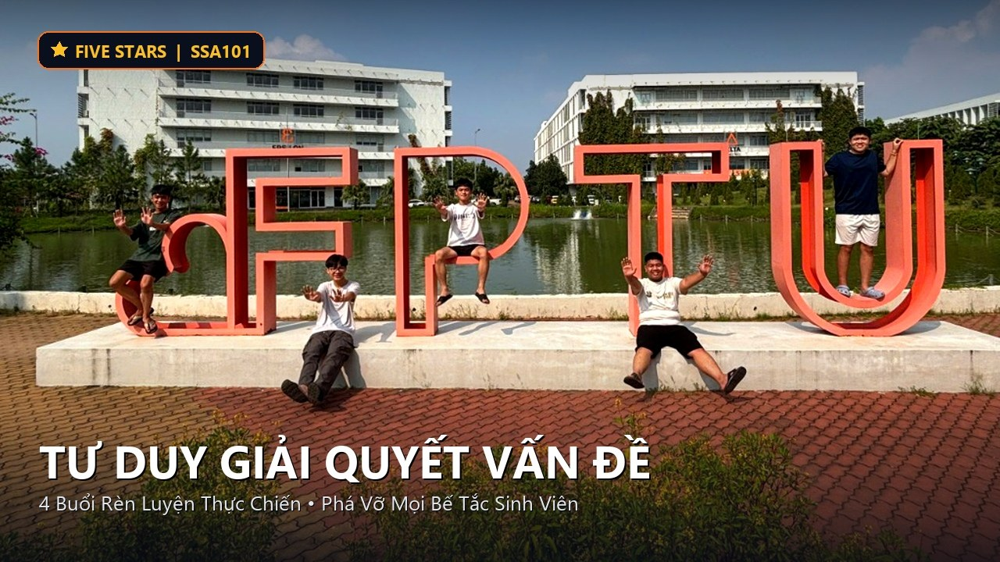

DỰ ÁN RÈN LUYỆN PHÁT TRIỂN TƯ DUY GIẢI QUYẾT VẤN ĐỀ
Trang bị bộ công cụ tư duy bài bản từ nhận diện vấn đề đến kiểm chứng thông tin đa chiều,
giúp sinh viên tự tin sáng tạo giải pháp khả thi trước mọi thách thức trong kỷ nguyên số và AI.
Nhóm Five Stars
Vũ Tiến Dũng
Nguyễn Phúc Ngọc Trúc
Nguyễn Văn Trường
Trần Lê Nhật Khánh
Nguyễn Quang Minh
Thông điệp từ Five Stars:
"Trong kỷ nguyên số, kỹ năng tư duy giải quyết vấn đề không chỉ là kỹ năng mềm mà là chìa khóa vàng giúp sinh viên nâng cao năng lực học tập, làm việc nhóm và chủ động làm chủ cuộc sống. Chúng mình mang đến các tình huống thực tiễn và công cụ tư duy bài bản để đồng hành cùng các bạn vượt qua mọi rào cản."
Video Chiêu Sinh Dự Án Five Stars
Khám phá phương pháp học chủ động và những chia sẻ trực tiếp từ nhóm tác giả về khóa học Tư Duy Giải Quyết Vấn Đề (SSA101).

Bối Cảnh & Lý Do Chọn Đề Án
Khó khăn và áp lực luôn song hành trong cuộc sống học đường. Thiếu một phương pháp tiếp cận bài bản khiến sinh viên dễ mất phương hướng và động lực.
Kết Quả Khảo Sát Thực Tế Tại FPT University
Dữ liệu sơ cấp từ 34 sinh viên: "Những khó khăn trong học tập & phát triển bản thân"
Chuyển Hóa Khó Khăn Thành Thách Thức
Mọi rào cản từ tụt động lực đến xung đột nhóm đều bắt nguồn từ việc thiếu phương pháp tư duy đúng đắn. Dự án giúp biến những câu than thở thành các bài toán cụ thể có thể giải quyết được.
Kỹ Năng Sống Còn Cho Tương Lai
Theo World Economic Forum (2025), 7/10 doanh nghiệp coi tư duy phân tích là kỹ năng thiết yếu nhất khi tuyển dụng, trong khi 39% kỹ năng hiện tại sẽ bị thay đổi trong giai đoạn 2025–2030.
Lộ Trình 4 Buổi Học Khóa "Tư Duy Giải Quyết Vấn Đề"
Thời lượng 45 - 60 phút/ buổi theo hình thức Offline. Kết hợp giữa lý thuyết và thực hành chủ động trên các tình huống thật.
| Buổi | Tên Chủ Đề & Bài Học | Hình Thức | Nội Dung Trọng Tâm |
|---|---|---|---|
| 01 |
Nhận diện bài toán
"Vấn đề không phải kẻ thù"
|
Offline (45 - 60p) | Phân biệt vấn đề – triệu chứng – nguyên nhân qua khung 5W1H; tránh bẫy tư duy thường gặp và phát biểu chính xác bài toán thực tế. |
| 02 |
Truy tìm gốc rễ
"Đào tận gốc"
|
Offline (45 - 60p) | Kỹ thuật 5 Whys & Sơ đồ xương cá (Ishikawa) theo 4 nhánh; bóc tách nguyên nhân cốt lõi khách quan, tránh đổ lỗi. |
| 03 |
Xác minh & Sử dụng AI
"Lọc trước khi tin"
|
Offline (45 - 60p) | Quy trình SIFT kiểm chứng thông tin đa chiều dưới 3 phút; nguyên tắc ứng dụng AI có trách nhiệm (UNESCO 2024). |
| 04 |
Thử nghiệm & Demo Day
"Từ ý tưởng đến giải pháp"
|
Offline (45 - 60p) | Design Thinking rút gọn & ma trận Tác động × Khả thi; hoàn thiện kế hoạch hành động và thuyết trình Demo Day 90s. |
Lý thuyết cô đọng, tập trung thực hành chủ động trên tình huống thật.
Dùng chính vấn đề do sinh viên gửi về để phân tích và mổ xẻ.
Thảo luận nhóm nhỏ, xoay vòng vai trò, loại bỏ tình trạng ỷ lại.
Theo dõi hành động sau 7 ngày với thẻ cam kết và bạn đồng hành.
Cam Kết Của Nhóm Five Stars
Nhóm Five Stars cam kết thực hiện đề án với tinh thần học thuật nghiêm túc, minh bạch và đặt lợi ích của người học lên hàng đầu.
Nội Dung Học Thuật Chuẩn Mực
Toàn bộ kiến thức đều dựa trên các nghiên cứu khoa học có thật, được trích dẫn chuẩn mực. Tuyệt đối không sao chép nguyên văn và không sử dụng dữ liệu chưa kiểm chứng.
Trung Thực Dữ Liệu Khảo Sát
Dữ liệu sơ cấp được thu thập độc lập từ 34 sinh viên ĐH FPT, hoàn toàn không chỉnh sửa hay làm đẹp kết quả; danh tính người tham gia được ẩn danh bảo mật 100%.
Trách Nhiệm Triển Khai Thực Tế
Các thành viên tham gia đầy đủ, phân công minh bạch và chịu trách nhiệm chung. Từng buổi học được chuẩn bị trước ít nhất 3 ngày, rà soát chu đáo giáo án và không gian lớp học Offline.
Môi Trường Học An Toàn & Tôn Trọng
Kiến tạo không gian học cởi mở: mọi ý kiến của sinh viên đều được lắng nghe, tôn trọng và không phán xét. Tuyệt đối không công khai thông tin cá nhân của người học nếu chưa được đồng ý.
Ứng Dụng AI Có Trách Nhiệm
Ứng dụng AI như một trợ thủ hỗ trợ lên ý tưởng, nhưng 100% nội dung đưa vào đề án đều được nhóm kiểm chứng lại từ nguồn gốc theo chuẩn UNESCO 2024, đúng tinh thần bài học Buổi 3.
Cầu Thị & Tiếp Nhận Góp Ý
Nhóm sẵn sàng tiếp thu mọi nhận xét từ giảng viên bộ môn SSA và các bạn sinh viên để liên tục hoàn thiện và nâng cao chất lượng đề tài trước khi triển khai chính thức.
Đăng Ký Khóa Học Five Stars
Tham gia ngay cùng chúng mình để rèn luyện tư duy phản biện, làm chủ phương pháp 5 Whys, SIFT và tự tin giải quyết mọi khó khăn trong học tập tại FPT University.
Biểu Mẫu Đăng Ký Trực Tuyến
Danh Mục Tài Liệu Tham Khảo
Các nguồn học thuật và số liệu khảo sát trích dẫn trong đề án